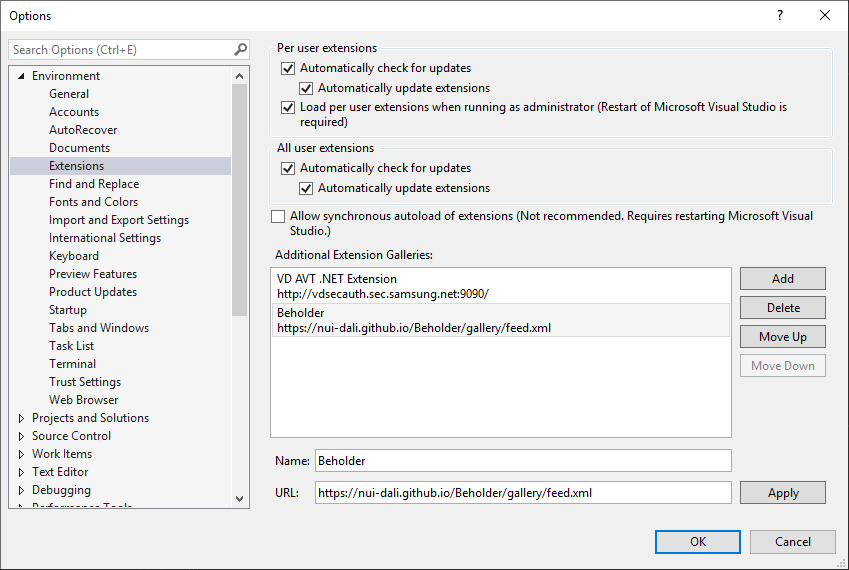

Beholder
NUI hotreloading on Tizen
Project Site

Install with Private Feed
Add this feed to Your VS Extension private gallery.

To add a private gallery to Extensions and Updates
- On the menu bar, choose Tools > Options.
- In the Environment node, select Extensions and Updates.
- Choose the Add button.
- In the Name field, enter a name for the Beholder.
- In the URL field, enter the URL.
Install extensions from a private gallery

To search for and install extensions from a private gallery
- On the menu bar, choose Tools > Extensions and Updates.
- In the left pane, select Online Extensions, and then select Beholder.
- In the right pane, select an Tizen.NUI.Hotreloading, and then choose the Download button.
You can learn more about how to install your personal gallery in this MS article.
How to Use it

- Open your NUI project.
- On the menu bar, choose Tools > Enable Beholder.
- On the menu bar, choose Debug > Run without Debug.
- Open and Edit the xaml file
- Save the xaml file
Now beholder is still in alpha test, you can see more information in the output window of Visual Studio.

Known Issue
There is a delay of several seconds during the first hotreloading.